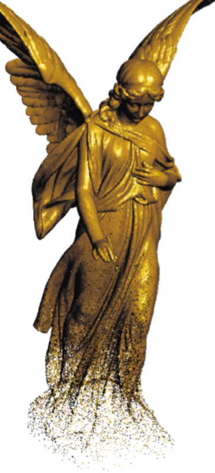
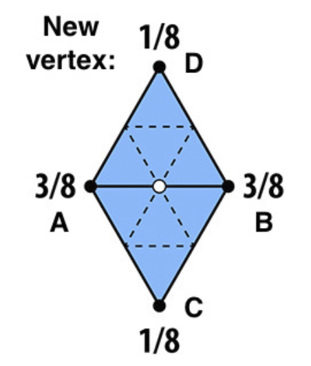

——不是所有物体都用三角形的面来表示。
几何表示
隐式几何
点满足一定的关系。
比如要显示一个球，需要满足
隐式几何的优点是判断一个点在物体内外很容易。
缺点是只看方程很难判断图形形状。
Constructive Solid Geometry(CSG)
CSG指的是可以对各种不同的几何做布尔运算，如并，交，差：
符号距离函数（Signed Distance Function）
符号距离函数来说本质上就是一种定义距离的函数。
给出任意点到物体的距离。这个距离是带符号的，有正有负。
可以观察到p点到圆边界的距离为：
如有空间任意一点到各个几何物体表面的距离，对这些距离做各种各样的运算操作最后得到的一个函数就是最终的距离函数了。
水平集（Level Set）
用存储函数近似值的网格表示图形。
对该面内的每一个点利用已经定义好的格子值进行双线性插值(在纹理映射一节已讲解)就可以得到任意一点的函数值，找出所有=0的点作为曲面。
分型（Fractals）
分型几何是指许许多多自相似的形体最终所组成的几何形状。类似于递归。
显式几何
在空间中直接定义了一些点。
或者在空间中定义一组映射关系：
显式几何的优点是判断物体的形状容易。
缺点是判断一个点在物体内外困难。
点云（Point Cloud）
使用很多空间中的点所构成的曲面。

可以看出图形上方的点密集，下方的点稀疏。
多边形网格（Polygon Mesh）
使用最广泛的显示几何表示。
存储顶点和多边形（一般是三角形或者四边形）
一般建模软件所使用的就是多边形网格表示，建模软件生成的obj文件如下：
- v 是顶点坐标
- vt 是纹理坐标
- vn 是点的法向量
- f 代表一个面由哪些顶点/纹理/法向量组成
曲线
贝塞尔曲线（Bézier Curves）
用控制点定义的曲线。
曲线一定过起始点，进入方向为$\overrightarrow{P_0P_1}$，射出方向为$\overrightarrow{P_2P_3}$
三次贝塞尔曲线如图：

生成
考虑有三个顶点控制的曲线（二次贝塞尔曲线）：
在线段上使用线性插值：
考虑一点$b^1_0$在$b_0b_1$上运动，需要在1秒内从$b_0$移动到$b_1$。
那么另一点$b^1_1$在$b_1b_2$上运动，需要在1秒内从$b_1$移动到$b_2$。
那么在t时刻($t\epsilon[0,1]$),利用线性插值公式有：
同理：
链接$b^0_1$与$b^{1}_1$。
在$b^2_0$点用插值公式有：
将公式（1）（2）带入（3）有：
可以看出$b^{2}_0$的展开式的系数是$(1-t+t)^2$的完全平方展开。
同理四个控制点的三次贝塞尔曲线有：
逐层插值有：
可得：
由此可以得到一般的n阶（n+1个顶点）贝塞尔曲线表达式：
其中$B^n_j(t)$为：
也称伯恩斯坦多项式（Bernstein polynomials）
就是$(1-t+t)^n$的二项展开。相当于1的展开式，因此在各个时刻，伯恩斯坦多项式加起来为1。
$b_i$点可以换成三维空间的点，可以在三维空间中画出贝塞尔曲线。

性质
- 仿射不变性（投影变换会改变曲线）
- 凸包性质（曲线会被控制点围起来）
- 对称性
高阶贝塞尔曲线很难进行控制：
因此，我们常用3阶贝塞尔曲线分段进行控制。
贝塞尔曲面（Bézier Surfaces）
使用4x4共16个点描述贝塞尔曲面
- 首先竖列取4个点生成贝塞尔曲线,一共4组，使用时间u。
- 横向上，用1生成的4组点再描述贝塞尔曲线，使用时间v。

- 对于二维不同的u,v，在空间中都能对应一个点。
网格处理（Mesh Operations）

网格细分（Mesh Subdivision）
曲面细分是指将一个模型的面合理的分成更多小的面，从而提升模型精度。
Loop细分（Loop Subdivision）
连结三角形的三边的中点，将一个三角形划分为4个三角形。
将三角形的顶点划分为两类：细分前就存在的老顶点，细分后生成的顶点叫做新顶点。
(暂且只考虑非边界的情况)
对新顶点做以下处理：

新顶点（白色的点）由老顶点（A 、B、C、D）的位置所决定，AB点在新顶点的共享边上，CD在新顶点的不共享边上。
对老顶点的处理如下：
老顶点的位置由相邻的老顶点何其自身的位置决定。
n为需要更新的老顶点的度。
u为$\frac{1}{n}*[\frac{5}{8}-(\frac{3}{8}+\frac{1}{4}\cos{\frac{2\pi}{n}})^2]$。
先细分曲面，再调整顶点。
Loop细分更新效果：
Catmull-Clark Subdivision
Loop细分只是针对三角形构成的物体，Catmull-Clark Subdivision可以细分四边形与三角形的混合细分。
- 对于所有不是四边形的面，称之为Non-quad face
- 所有度不为4的顶点称之为奇异点
将每个网格边上的中点与网格中线相连：
经过一次细分，可以得到：
会增加Non-quad face数量的奇异点，而且已经没有Non-quad face了。
再次细分：
因为已经没有Non-quad face了，所以再细分也不会增加奇异点数量。
顶点的位置调整：
对应网格重心点$f$，边上的中点$e$，网格的顶点$p$位置调整规则。
Catmull-Clark Subdivision 效果
网格简化（Mesh Simplification）
将一个模型的面合理的合成更少的面，从而降低模型精度。
边坍缩（Collapsing An Edge）
如何保证坍缩后的几何形状不发生大变化？
引入二次度量误差（Quadric Error Metrics）
左图为五点距离取平均，显然坍缩后形状发生了很大的改变。
右图为构造的新顶点距离原相关三角形面的距离平方（L2距离）之和最小。
边坍缩流程：
- 为模型每条边赋值，其值为坍缩这条边之后（会形成一个点），代替两个老顶点的新顶点所能得到的最小二次误差度量
- 选取权值最小的边做坍缩，新顶点位置为原来计算得出使得二次误差最小的位置
- 坍缩完之后，与之相连其他的边的位置会改动，更新这些边的权值
- 重复上述步骤，直到到达终止条件
边坍缩效果：